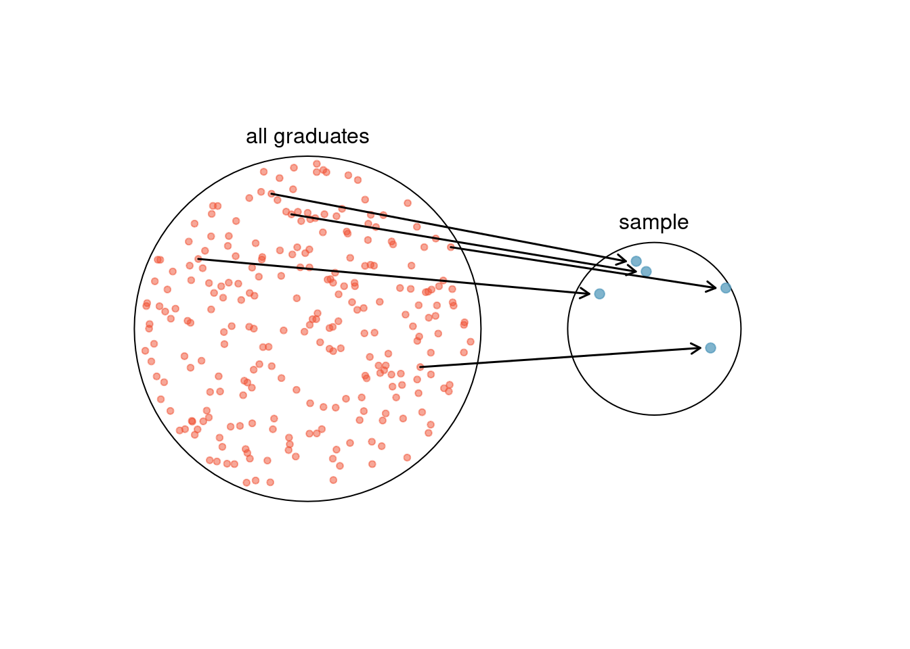
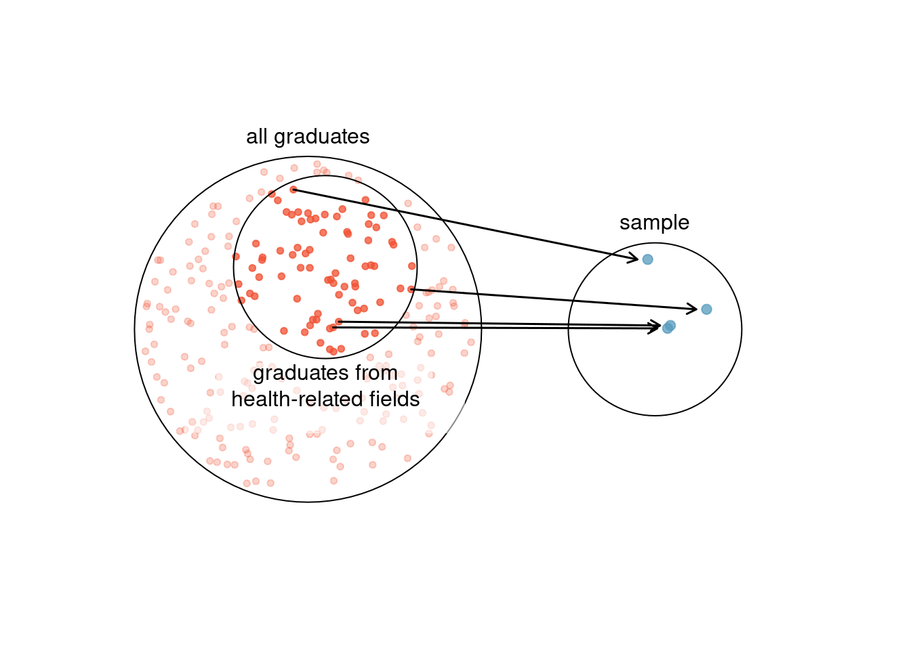
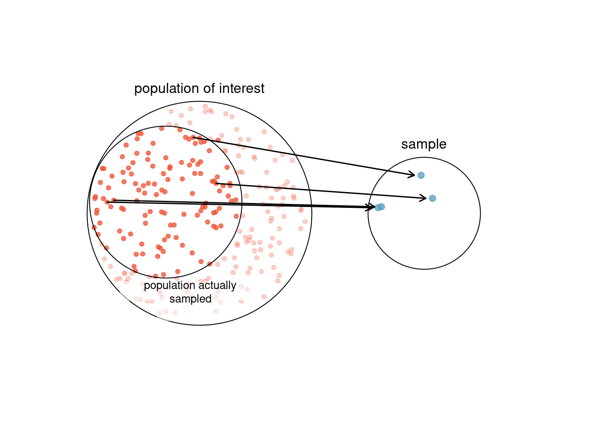

3 Overview of Data Collection Principles
3.1 Objectives
Define and use properly in context all new terminology, to include: population, sample, anecdotal evidence, bias, simple random sample, systematic sample, non-response bias, representative sample, convenience sample, explanatory variable, response variable, observational study, cohort, experiment, randomized experiment, and placebo.
From a description of a research project, be able to describe the population of interest, the generalizability of the study, the explanatory and response variables, whether it is observational or experimental, and determine the type of sample.
In the context of a problem, explain how to conduct a sample for the different types of sampling procedures.
3.2 Overview of data collection principles
The first step in conducting research is to identify topics or questions that are to be investigated. A clearly laid out research question is helpful in identifying what subjects or cases should be studied and what variables are important. It is also important to consider how data are collected so that they are reliable and help achieve the research goals.
3.2.1 Populations and samples
Consider the following three research questions:
- What is the average mercury content in swordfish in the Atlantic Ocean?
- Over the last 5 years, what is the average time to complete a degree for Duke undergraduate students?
- Does a new drug reduce the number of deaths in patients with severe heart disease?
Each research question refers to a target population, the entire collection of individuals about which we want information. In the first question, the target population is all swordfish in the Atlantic Ocean, and each fish represents a case. It is usually too expensive to collect data for every case in a population. Instead, a sample is taken. A sample represents a subset of the cases and is often a small fraction of the population. For instance, 60 swordfish (or some other number) in the population might be selected, and this sample data may be used to provide an estimate of the population average and answer the research question.
Exercise:
For the second and third questions above, identify the target population and what represents an individual case.1
3.2.2 Anecdotal evidence
Consider the following possible responses to the three research questions:
- A man on the news got mercury poisoning from eating swordfish, so the average mercury concentration in swordfish must be dangerously high.
- I met two students who took more than 7 years to graduate from Duke, so it must take longer to graduate at Duke than at many other colleges.
- My friend’s dad had a heart attack and died after they gave him a new heart disease drug, so the drug must not work.
Each conclusion is based on data. However, there are two problems. First, the data only represent one or two cases. Second, and more importantly, it is unclear whether these cases are actually representative of the population. Data collected in this haphazard fashion are called anecdotal evidence.
Anecdotal evidence: Be careful of data collected haphazardly. Such evidence may be true and verifiable, but it may only represent extraordinary cases.
Anecdotal evidence typically is composed of unusual cases that we recall based on their striking characteristics. For instance, we are more likely to remember the two people we met who took 7 years to graduate than the six others who graduated in four years. Instead of looking at the most unusual cases, we should examine a sample of many cases that represent the population.
3.2.3 Sampling from a population
We might try to estimate the time to graduation for Duke undergraduates in the last 5 years by collecting a sample of students. All graduates in the last 5 years represent the population, and graduates who are selected for review are collectively called the sample. In general, we always seek to randomly select a sample from a population. The most basic type of random selection is equivalent to how raffles are conducted. For example, in selecting graduates, we could write each graduate’s name on a raffle ticket and draw 100 tickets. The selected names would represent a random sample of 100 graduates. This is illustrated in Figure fig-randsamp .

Why pick a sample randomly? Why not just pick a sample by hand? Consider the following scenario.
Example:
Suppose we ask a student who happens to be majoring in nutrition to select several graduates for the study. What kind of students do you think she might collect? Do you think her sample would be representative of all graduates? 2

If someone was permitted to pick and choose exactly which graduates were included in the sample, it is entirely possible that the sample could be skewed to that person’s interests, which may be entirely unintentional. This introduces sampling bias (see Figure fig-biased), where some individuals in the population are more likely to be sampled than others. Sampling randomly helps resolve this problem. The most basic random sample is called a simple random sample, which is equivalent to using a raffle to select cases. This means that each case in the population has an equal chance of being included and there is no implied connection between the cases in the sample.
Sometimes a simple random sample is difficult to implement and an alternative method is helpful. One such substitute is a systematic sample, where one case is sampled after letting a fixed number of others, say 10 other cases, pass by. Since this approach uses a mechanism that is not easily subject to personal biases, it often yields a reasonably representative sample. This book will focus on simple random samples since the use of systematic samples is uncommon and requires additional considerations of the context.
The act of taking a simple random sample helps minimize bias. However, bias can crop up in other ways. Even when people are picked at random, e.g. for surveys, caution must be exercised if the non-response is high. For instance, if only 30% of the people randomly sampled for a survey actually respond, and it is unclear whether the respondents are representative3 of the entire population, the survey might suffer from non-response bias4.

Another common pitfall is a convenience sample, where individuals who are easily accessible are more likely to be included in the sample, see Figure fig-convsamp. For instance, if a political survey is done by stopping people walking in the Bronx, it will not represent all of New York City. It is often difficult to discern what sub-population a convenience sample represents.
Exercise:
We can easily access ratings for products, sellers, and companies through websites. These ratings are based only on those people who go out of their way to provide a rating. If 50% of online reviews for a product are negative, do you think this means that 50% of buyers are dissatisfied with the product?5
3.2.4 Explanatory and response variables
Consider the following question for the county data set:
Is federal spending, on average, higher or lower in counties with high rates of poverty?
If we suspect poverty might affect spending in a county, then poverty is the explanatory variable and federal spending is the response variable in the relationship.6 If there are many variables, it may be possible to consider a number of them as explanatory variables.
Explanatory and response variables
To identify the explanatory variable in a pair of variables, identify which of the two variables is suspected as explaining or causing changes in the other. In data sets with more than two variables, it is possible to have multiple explanatory variables. The response variable is the outcome or result of interest.
Caution: Association does not imply causation. Labeling variables as explanatory and response does not guarantee the relationship between the two is actually causal, even if there is an association identified between the two variables. We use these labels only to keep track of which variable we suspect affects the other. We also use this language to help in our use of
Rand the formula notation.
In some cases, there is no explanatory or response variable. Consider the following question:
If homeownership in a particular county is lower than the national average, will the percent of multi-unit structures in that county likely be above or below the national average?
It is difficult to decide which of these variables should be considered the explanatory and response variable; i.e. the direction is ambiguous, so no explanatory or response labels are suggested here.
3.2.5 Introducing observational studies and experiments
There are two primary types of data collection: observational studies and experiments.
Researchers perform an observational study when they collect data in a way that does not directly interfere with how the data arise. For instance, researchers may collect information via surveys, review medical or company records, or follow a cohort7 of many similar individuals to study why certain diseases might develop. In each of these situations, researchers merely observe what happens. In general, observational studies can provide evidence of a naturally occurring association between variables, but by themselves, they cannot show a causal connection.
When researchers want to investigate the possibility of a causal connection, they conduct an experiment, a study in which the explanatory variables are assigned rather than observed. For instance, we may suspect administering a drug will reduce mortality in heart attack patients over the following year. To check if there really is a causal connection between the explanatory variable and the response, researchers will collect a sample of individuals and split them into groups. The individuals in each group are assigned a treatment. When individuals are randomly assigned to a treatment group, and we are comparing at least two treatments, the experiment is called a randomized comparative experiment. For example, each heart attack patient in the drug trial could be randomly assigned, perhaps by flipping a coin, into one of two groups: the first group receives a placebo (fake treatment) and the second group receives the drug. The case study at the beginning of the book is another example of an experiment, though that study did not employ a placebo. Math 359 is a course on the design and analysis of experimental data, DOE, at USAFA. In the Air Force, these types of experiments are an important part of test and evaluation. Many Air Force analysts are expert practitioners of DOE. In this book though, we will minimize our discussion of DOE.
Association \(\neq\) Causation
Again, association does not imply causation. In a data analysis, association does not imply causation, and causation can only be inferred from a randomized experiment. Although, a hot field is the analysis of causal relationships in observational data. This is important because consider cigarette smoking, how do we know it causes lung cancer? We only have observational data and clearly cannot do an experiment. We think analysts will be charged in the near future with using causal reasoning on observational data.
2) Notice that the second question is only relevant to students who complete their degree; the average cannot be computed using a student who never finished her degree. Thus, only Duke undergraduate students who have graduated in the last five years represent cases in the population under consideration. Each such student would represent an individual case. 3) A person with severe heart disease represents a case. The population includes all people with severe heart disease.↩︎
Perhaps she would pick a disproportionate number of graduates from health-related fields. Or perhaps her selection would be well-representative of the population. When selecting samples by hand, we run the risk of picking a biased sample, even if that bias is unintentional or difficult to discern.↩︎
A representative sample accurately reflects the characteristics of the population.↩︎
Non-response bias is bias that can be introduced when subjects elect not to participate in a study. Often, the individuals that do participate are systematically different from the individuals who do not.↩︎
Answers will vary. From our own anecdotal experiences, we believe people tend to rant more about products that fell below expectations than rave about those that perform as expected. For this reason, we suspect there is a negative bias in product ratings on sites like Amazon. However, since our experiences may not be representative, we also keep an open mind.↩︎
Sometimes the explanatory variable is called the independent variable and the response variable is called the dependent variable. However, this becomes confusing since a pair of variables might be independent or dependent, so be careful and consider the context when using or reading these words.↩︎
A cohort is a group of individuals who are similar in some way.↩︎